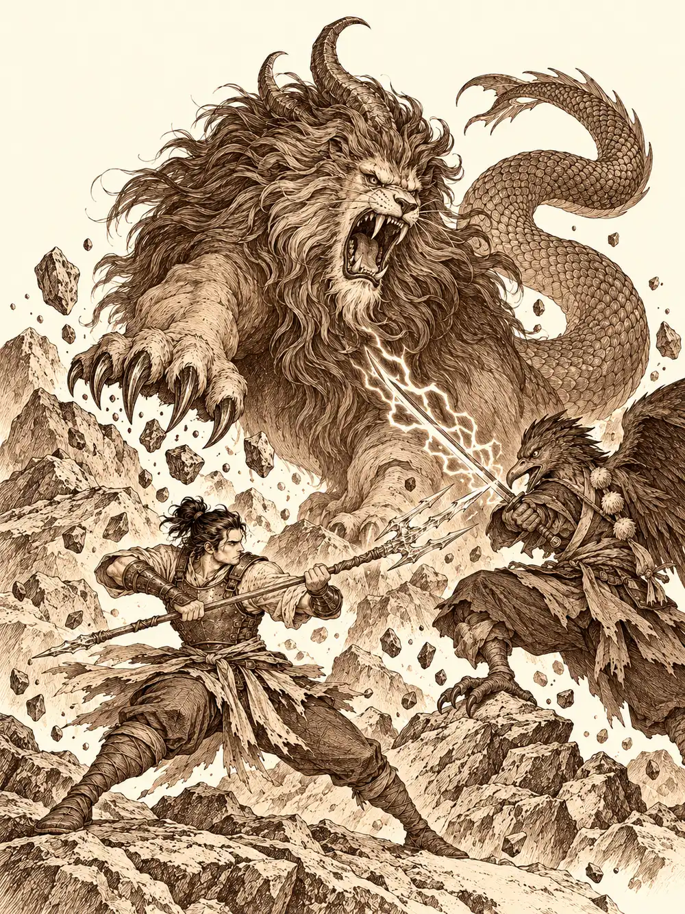

Capítulo 148
La llegada de las mareas
Libro IX · Mareas y muertos
Banzo llegó al palacio maldiciendo a Archi entre dientes. El gnomo y su socio le habían prometido ayuda con la mano que le faltaba, y en una o dos horas de trabajo le habían fabricado una prótesis de madera con alguna chapa clavada encima, como para que el goliat se callara. Era una mano derecha. A Banzo le faltaba la izquierda. El pulgar le quedaba del lado contrario y cada vez que intentaba agarrar algo con ella parecía que la mano tuviera intenciones propias.
Jin caminaba a su lado con un plan en la cabeza y Kurobane un paso por detrás, sin decir nada. En la puerta del salón de entrenamiento de los tritones, unos pinchos brotaron del suelo y les mordieron los tobillos, y los soldados de escamas los miraron como quien mira a unos niños que han pisado un charco.
En la sala del trono, Calista trabajaba entre papeles con Ayuko, con los cónsules y con la perla velada sentada a su lado. Llevaba días sin dormir lo suficiente y se le notaba en los ojos, pero les dedicó una sonrisa suave cuando entraron. Gelbreak estaba apoyado en la pared del fondo, aburrido, y le dio a Banzo dos palmadas en el hombro.
"Ya sabes cómo va esto", le dijo.
Banzo y Gelbreak sabían algo más que no estaba en ningún papel. Dos soldados tritones habían aparecido muertos en los callejones de los barrios bajos, uno con un agujero en la cabeza y el otro con el cuello roto, y con Calista habían decidido que el asunto no saliera de allí, al menos de momento, para no romper la frágil paz con los recién llegados. Nadie sabía con certeza quién los había matado.
Jin expuso su plan. Había estado observando a los soldados del sur y había encontrado a una decena con más potencial que el resto; quería entrenarlos aparte, crear con ellos un grupo de élite dentro del ejército. Calista lo aprobó, aunque tendrían que decidir dónde, en un lugar apartado. Y le encargó algo más.
"Quiero que coordines el campamento sur, la Puerta Negra y cualquier entrada de demonios en nuestras tierras. Necesito a alguien con buenos ojos y mucha fuerza allí abajo para que ningún demonio se acerque a nuestras aldeas. Tendrás al consejo militar para ayudarte".
Jin aceptó con reservas. No era general; era un hombre que sabía pelear y que había empezado a saber enseñar. A Kurobane, Calista le entregó un libro y unas pautas para desmantelar a los cultistas. Y a Banzo le dijo que, como líder de los cazadores, coordinaría a los suyos y decidiría a quién enviaba a cada sitio, y que podría apoyarse en Sirth. Mientras hablaba, movía los dedos sobre la mesa como quien tamborilea. Banzo oyó en su cabeza la voz de la shogun, sin que nadie más la oyera: que siguiera investigando a Danifae y las esferas, que la ayudaría, pero que aquello no podía decirlo delante de la perla.
La perla lo notó de todos modos, o lo sospechó.
"Estas misiones solo son cosas de los cazadores", dijo Calista cuando la perla preguntó. "Son secretas, por seguridad. Ya tuvimos infiltrados antes".
"Bien. Entonces que me pasen los informes de esas misiones secretas cuando las terminen".
En la biblioteca de palacio, con un silencio mágico tendido sobre la puerta para que nadie pudiera escucharlos, Calista, Jin y Kurobane hablaron de las esferas.
"Banzo me encargó encontrar a gente que sea afín a cada una", dijo Kurobane. Sacó un papel dividido en cuatro, con una lista en cada cuarto, y señaló a Jin. "Tú sobreviviste a aquellos experimentos con solo unas quemaduras. Puede que seas el más afín al fuego".
"No por voluntad propia, pero sí. Tengo afinidad con el fuego".
Lo curioso era que la bendición que Jin había recibido de los guardianes era de hielo. Calista se señaló a sí misma.
"La esfera de agua no es solo agua, también es hielo, y hay que aguantarlo. Yo soy tritón. He nadado en aguas heladas y resisto el frío. Puedo sostenerla mucho tiempo sin que me haga daño. Lo que no sé es quién aguantaría la del rayo".
"Se me ocurre alguien", dijo Jin. "Aunque lleva tiempo retirado. Hayate. Le cayó un rayo y le cambió la personalidad. Se podría decir que está bendecido por los mismísimos relámpagos".
Nadie sostuvo ninguna esfera aquel día. Calista les contó lo que tenía. Las de fuego y rayo estaban en su poder; la de tierra se la había tragado Arwen y nadie sabía todavía cómo sacársela.
"Lo que quiero hacer con ellas es investigarlas y después destruirlas. No me fío de lo que Danifae quiera hacer con estas cosas".
Kurobane le contó lo que el dragón les había dicho: que eran esencia elemental pura, ni buena ni mala. Le enseñó la mano sin guante, cubierta de unas marcas como de rayos, y el estoque destrozado. Más tarde, cuando alguien preguntó por la cuarta, Calista admitió que la de agua estaba a buen recaudo y que solo ella y Gelbreak sabían dónde. No dijo dónde.
Banzo, con el permiso de Calista y de Gelbreak, bajó a las celdas con Kurobane. Danifae colgaba de unas cadenas clavadas en el techo y en el suelo, con los pies sin tocar las losas y una mordaza en la boca. Tenía las muñecas y los tobillos en carne viva. Cuando los vio entrar, se le iluminaron los ojos.
Banzo se acercó hasta que sus cabezas casi se tocaron.
"Te tendí la mano y la rechazaste. Así es como has acabado".
Ella le miró la mano falsa, con el pulgar del revés. Banzo le apartó la ropa con la punta de la espada lo justo para ver lo que había venido a ver: bajo el pecho seguía la marca de una araña muerta, con las patas encogidas hacia arriba. Luego dejó en el suelo su bolsa de huesos y abrió con magia un ojo invisible que veía a las criaturas tal como eran. Vio a Danifae. Solo a Danifae, colgada, sin ninguna otra forma escondida.
"¿No tienes prisa por terminar tu tarea?".
Ella no podía hablar. Banzo alzó la espada con todas sus fuerzas y descargó el golpe contra el suelo, junto a sus pies. El ruido llenó la celda. Las pupilas de Danifae se alargaron un instante, se volvieron rendijas como las de un gato, y enseguida recobraron su forma. Banzo sintió algo que tiraba de su voluntad y lo apartó.
"Tapadle también los ojos", le dijo al carcelero, y salió.
De vuelta, Calista le recomendó a Kurobane que hablara con Tiari, la jefa de Cuchillas Negras, para conseguir información sobre los cultistas a base de favores mutuos. Kurobane ató cabos en voz alta: Danifae había mencionado una vez a un informante, y él sospechaba que podía ser Tiari. Era solo una teoría.
Les llegó una orden urgente del sur, y cruzaron el portal hasta el campamento. Había tritones por todas partes. Gelbreak le echó por encima a Calista una capa que resistía el fuego, y ella lo agradeció sobre todo por la lluvia, que no paraba.
El general Hati salió de su tienda y abrazó a Banzo con las dos manos.

"Cuánto tiempo. Los tritones están reforzando nuestras defensas, y hay que reconocer que su general ha mejorado mucho las cosas. Salió con algunos soldados hacia una brecha del perímetro que parecía pequeña, pero hace demasiado que no vuelven. Íbamos a mandar una patrulla a buscarlos".
"Ya vamos nosotros", dijo Banzo. "Además, quiero ver cómo trabaja ese general".
Calista decidió ir con ellos. Una brecha pequeña no debería tardar tanto en cerrarse, y menos con soldados tritones. Les lanzó unas palabras de ánimo antes de salir y les advirtió que no bajaran la guardia: en el sur todavía había muchos peligros.
Por el camino, Gelbreak se rezagó con Banzo y bajó la voz.
"El general fue pareja de Calista".
Banzo se le quedó mirando con la boca abierta.
"Yo confío en ella totalmente. De quien no me fío es de él. Si hay algún conflicto, déjamelo a mí".
Unos pasos más adelante, Kurobane se acercó a Calista y le ofreció, si alguna vez necesitaba vigilar a los tritones sin que nadie se enterara, hacerlo él. Calista lo miró, dijo que lo tendría en cuenta, que ella tampoco se fiaba de ellos, y siguió caminando. No le encargó nada.
A Banzo, la prótesis de Archi se le desarmó en el camino. Se quedó mirando las piezas en la palma, sin decir palabra.
Luego empezaron a encontrar sangre. Había cuerpos de samuráis tirados a lo largo de la senda, no amontonados, sino repartidos, como si hubieran ido cayendo mientras retrocedían. Más adelante, un soldado muy herido se tambaleó hacia ellos y logró decirles que los demonios seguían atacando antes de que Gelbreak lo sostuviera.
El combate seguía en un claro entre montañas. Había una bestia enorme con cuerpo de león, cola de serpiente y un chillido que hacía temblar las piedras, y tengu, hombres pájaro con espadas que chisporroteaban de electricidad, aarakocra contaminados por la sangre de Otakemaru. Por el suelo se repartían los samuráis muertos, algunos chamuscados. En medio, con un tridente de hielo, peleaba un tritón ágil, de armadura ligera, que se movía más deprisa de lo que parecía posible. Era Wel.
El primero al que Calista vio caer fue un soldado tritón. Intentó ayudarlo con su magia y no llegó a tiempo: la espada del tengu le cortó la cabeza de un tajo.
Wel peleaba bien y lo sabía. Entre golpe y golpe se volvía para provocar a Gelbreak, y Gelbreak le contestaba con algo peor. Calista inmovilizó a uno de los enemigos, Jin aceleró sus ataques con una magia que lo hacía moverse el doble de rápido y Kurobane dejó aturdido a un tengu. Banzo entró en furia y se interpuso entre Gelbreak y la bestia cuando esta lanzó una descarga eléctrica que habría alcanzado al drow de lleno. Se llevó parte del golpe y se lo devolvió. La explosión hizo perder a Jin la concentración, y con ella la velocidad.
Al final, Banzo soltó el grito de sus ancestros contra la bestia. Sus espíritus salieron de su cuerpo, se metieron en la criatura y la mataron por dentro. La furia se le apagó de golpe y quedó en pie, temblando, vacío. Kurobane acabó con el último tengu. Los demonios caídos se deshicieron como hacían siempre, de vuelta a su infierno, sin dejar cuerpos que registrar.
Wel se limpió el tridente.
"Vaya, Calista. ¿Tú también has venido?".
"Había problemas. ¿Cuántos efectivos hemos perdido?".
"De los míos, tres. De los vuestros, unos cuantos más. Eran bastante novatos. Quería probarlos, y probar a los demonios".
"Me da igual que no fueran diestros. Es tu responsabilidad como general".
"Tienes razón. Discúlpame, mi shogun". Le cogió la mano y se la besó, mirando a Gelbreak por encima. "Ya lo sabes. Yo doy órdenes a mi ejército y recibo órdenes de alguien superior".
"A usted no lo conozco", le dijo Wel a Jin.
"Soy Jin, uno de los encargados de manejar todo esto".
Wel se volvió hacia Calista.
"Entonces ya sabes quién tiene la culpa de que los soldados del shogunato estén muertos".
"Sí. Murieron mientras estaban bajo tu cuidado".
"¿Mi cuidado? Yo los dirijo. Si no saben moverse ni usar un arma, no es culpa mía, sino de quien los entrenó". Se acercó a Calista. "Es curioso. Antes me seguías a todas partes. Ahora intentas darme órdenes".
"Los tiempos cambian. Aprende a coordinarte con el general del otro ejército y deja de poner excusas".
"Mis estrategias son para soldados bien entrenados".
Wel echó a andar. Pasó por encima de uno de los cadáveres con cuidado de no tocarlo.
"¿No vas a llevarte ni siquiera a tus hombres?", le gritó Jin. "No te queda honor".
"Los soldados que mueren en un combate que debían ganar no merecen otra cosa".
"Un general de verdad carga con sus muertos".
Banzo, que se había agachado junto a uno de los cuerpos, se levantó y le preguntó por sus duelos. Había oído que los tritones se batían a muerte.
"Sigo vivo", dijo Wel. "Así que los he ganado todos. Entre nosotros, quien se retira de un duelo queda como un paria". Miró a Gelbreak de reojo. "Tu guardián tiene cierta fama entre los nuestros, por lo que he oído. No vengo a reclamar lo que una vez fue mío, Calista. Me sería bastante fácil y no merece la pena".
Se marchó. Desde lo alto de una roca, Kurobane lo vio irse, dispuesto a clavarle algo en la nuca al mínimo movimiento, y se quedó con las ganas.
Calista revisó el equipo de los muertos. Las armaduras eran mediocres y las armas estaban melladas; habían sido soldados novatos, sí. Eso no justificaba nada. Decidió llevarse a los samuráis caídos y dejar a los tritones al cuidado de su propio ejército. Jin y Kurobane volvieron con ella al campamento a buscar carretas y a que hablara con el general. Banzo y Gelbreak se quedaron junto a los cuerpos, bajo la lluvia, a esperar, y durante un buen rato ninguno de los dos dijo nada.
Calista llegó empapada a la tienda de Wel. Exigió explicaciones por la pérdida de un escuadrón entero en una misión menor. El general despreció a los soldados terrestres caídos y esquivó cada reproche con insinuaciones sobre lo que habían sido el uno para el otro. Cuestionó que ella siguiera mucho tiempo gobernando y usó su cariño por Gelbreak para provocarla. Calista defendió su trabajo, rechazó cada acercamiento y le propuso un entrenamiento al mejor de tres.
En el campo, bajo la lluvia, combinó la espada con desplazamientos y engaños. Un anillo de Wel deshizo su primer intento de dominarlo; luego consiguió meterle visiones en la cabeza, y una ilusión le permitió empatar a dos toques. Entonces Wel dejó de burlarse. La derribó, la sujetó por el cuello contra el barro y le dio el tercer golpe con la fuerza justa para hacerle daño. Al soltarla, le dijo que dependía demasiado de la magia y que con el drow sería menos compasivo.
Dos soldados del shogunato la ayudaron a levantarse. Calista les dio las gracias, les ordenó que descansaran y les pidió silencio. Se limpió el barro de la cara con el dorso de la mano, magullada, y caminó hacia el portal del palacio sin volver la vista atrás.